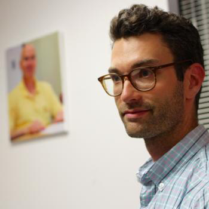

We are an interdisciplinary research space dedicated to exploring language and cognition through a multitude of methods.
Current projects include behavioral judgments to written and auditory stimuli, eye movements, EEG recording, mouse tracking, and corpus work.
Our current research topics include:
Learn more about our current research.
Friday, Jan. 8. 2:00pm - 4:00pm.
Campbell 220
Monday, Jan. 12. 3:00pm - 6:00pm
Campbell 350
Tuesday, Jan. 12. 3:00pm - 4:00pm
Campbell 220
Friday, Jan. 15. 11:00am - 1:00pm
Campbell 350
Friday, Jan. 21. 11:00am - 1:00pm
Campbell 350
When structure isn't enough: Discourse contrast in resolving focus-sensitive coordination. Talk with Katy Carlson.
Favoring a broad QUD in focus sensitive coordination. Talk with Katy Carlson.
Structure modulates similarity-based interference in sluicing: An eye movement study. Poster.
Focus particles in context: Support for the Broadest Focus Principle. Poster with Katy Carlson.
Focus marking isn't enough: The role of structural bias in focus-sensitive coordination. Poster with Katy Carlson.
We have many opportunities for participation in research. If you wish to participate in an eye tracking study, visit the Sign Up page to schedule a visit.
If you are interested in participating in the lab as a student researcher, please contact Professor Jesse Harris directly.
Interested in pursuing a Ph.D in Psycholinguistics? Learn more about UCLA's graduate program.